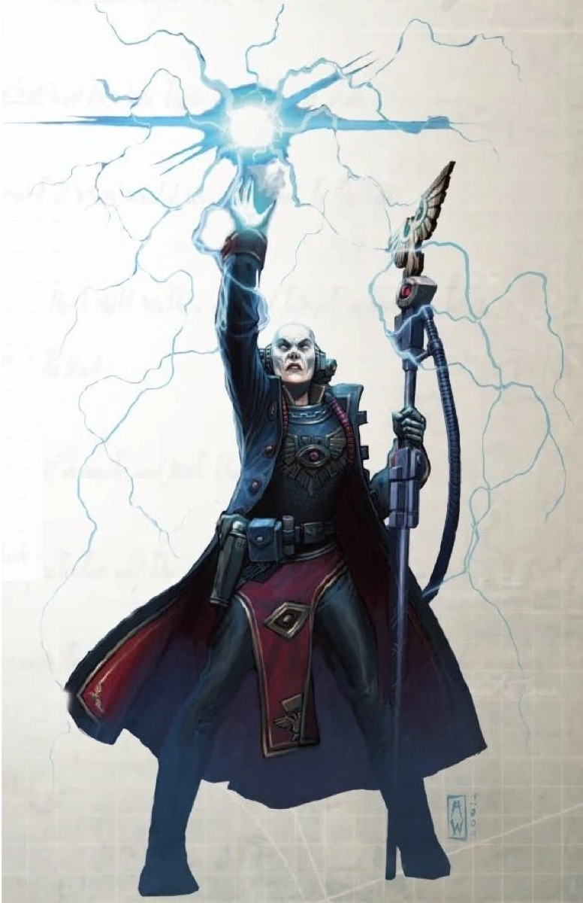

Astropathy
| Astropathy | |
|---|---|
 An astropathic choir at work, from a pict-capture in the archive of the Adeptus Astra Telepathica Artwork © Games Workshop | |
| Type | Telepathic communication across interstellar space |
| Practitioners | Astropaths, soul-bound psykers |
| Established | c. 797.M30[a] |
| Founder | The Emperor of Mankind |
| Governed by | Adeptus Astra Telepathica, Adeptus Terra |
| Training | Scholastica Psykana, Terra |
| Medium | The Warp |
| Present state | Disrupted by the Great Rift since 999.M41 |
Astropathy is the Imperial practice of sending and receiving messages across the Warp by telepathy. Those who practise it are called astropaths, or in older texts astro-telepaths, and they are psykers who have been bound in spirit to the Emperor of Mankind in the rite of soul binding. The Imperium has no other reliable way of speaking across interstellar space. A message sent by astropath may cross a sector in days or the galaxy in months, while a ship carrying the same message may take years and may never arrive.[1][2]
An astropath does not send words. The message is shaped in the mind as images, feelings and symbols, projected into the Warp and caught by another astropath, who must interpret it. Long messages are carried by choirs of astropaths working together, and the great distances are crossed by relays. The practice is slow, imprecise and cruel to its practitioners, who are made blind by the binding and die young. It is nevertheless the thread that holds the Imperium of Mankind together, and when the thread is cut, a world is alone.[1]
The opening of the Great Rift in 999.M41 was the worst disaster in the history of astropathy. Countless astropaths died or went mad in a moment, and in the Imperium Nihilus the greater part of the network fell silent. Restoring it has become a priority of the Imperium's rulers.[3]
Soul binding
[edit]The soul binding is the central rite of astropathy. It is carried out on the psyker after years of training, in a chamber of the Scholastica Psykana on Terra, with the aid of the Golden Throne. The Emperor's mind is joined to that of the psyker, and the contact hardens the psyker's soul against the predators of the Warp, giving the strength to send and receive messages without being consumed. The process is agonising. Some psykers die in it, and nearly all who survive are blinded, their eyes burnt out by the presence of the Emperor.[2][4]
The binding also costs the Emperor a part of his own strength each time it is performed, and the Adeptus Terra has long regarded it as a heavy tax on the Throne. Ecclesiarchy tradition holds that the Emperor accepts the burden because without astropaths the Imperium cannot be one. Mechanicus scholars take no view on the matter but note that no machine has yet replaced the astropath.[4][5]
Soul-bound astropaths are marked by their blindness, but they gain a form of sight in return: they see the Warp, and the souls of others, as light. An astropath's skin is often pale, and the more powerful ones are thin and tremulous. Many wear a hood and carry a staff. Their lifespan after binding is short, and an astropath who reaches the age of fifty is considered old.[2]
Sending a message
[edit]Imagery
[edit]A message sent by an astropath consists of images, sensations and emotions that the sender builds in the mind and casts into the Warp. A message for a particular astropath is aimed by sending the thought to the one whose psychic light the sender knows. If the receiver is far away or unknown, the message is cast out toward the destination, in the hope that a choir will catch it. The sender must be calm. A fearful astropath may send fear, and a fearful message may be heard by the wrong ears.[2]
Interpretation
[edit]The receiver must turn the images into words. Each astropath builds, over years, a private lexicon of symbols and meanings, and the same image may carry different meanings for two astropaths. A message from a distant world may therefore contain errors that no one can detect. Important messages are sent many times, by many astropaths, so that the receivers can compare what they hear. The Imperium's officials have learned to treat astropathic messages as probable rather than certain, and to ask for confirmation by ship whenever the matter allows.[2][1]
The messages are subject to the tides of the Warp. They may arrive late, early, garbled, or not at all. During a warp storm the astropaths of a world may hear nothing for years. They may also hear things that were not sent, as the denizens of the Warp can mimic a message, and an astropath who relays such a message may spread its corruption.[2]
Choirs and relays
[edit]A single astropath has a limited range. A choir, a group of astropaths who join their minds, can reach farther and speak more clearly, and every world of importance has a choir housed in a fortified tower. Each choir is guarded, and its members are watched for signs of corruption by the guards and the astropaths' own overseers. A world that loses its astropaths is cut off from the Imperium until new ones arrive on a Black Ship, which may take decades.[2]
The great distances of the Imperium are crossed by relays. A message from Terra to a distant sector passes through a chain of choirs, each of which hears the message, interprets it and sends it on. The principal relays are at the seats of the Segmentum commands and the segmentum fortresses. A message may be altered at each step, and the Administratum keeps a standing instruction to treat the number of relays as a measure of uncertainty. Warships of the Imperial Navy carry their own astropaths, who speak with the choirs of the nearest world and with each other.[2][6]
The Adeptus Astra Telepathica also keeps astropaths in the fortress-monasteries of the Adeptus Astartes, with the Inquisition and with the greater Rogue Trader houses, whose charters guarantee them the service.[2]
Training and tithe
[edit]Astropaths are drawn from the psykers gathered by the Black Ships and brought to Terra. At the Scholastica Psykana they are tested and sorted. The strongest in will are given to other purposes, as Primaris psykers of the Astra Militarum, as Librarians or as agents of the Inquisition. The majority, those of lesser power, are trained as astropaths, and those too weak, too old or too dangerous are sacrificed to the Throne. Training takes years, and the rite of soul binding is the last step.[4]
The Imperium relies on the Imperial tithe of psykers, which each world must give. A shortfall of astropaths is felt first on the frontier, where there are the fewest, and the frontier is where the astropaths are most needed.[1]
The Astronomican
[edit]The Astronomican is the beacon that guides ships through the Warp. It is a separate work from astropathy, and the psykers that serve it belong to the Adeptus Astronomica, not to the astropaths. The two are linked by the Emperor, whose will sustains the beacon and the binding, and by the fact that both draw upon psykers. Many of the psykers sacrificed on Terra feed the Astronomican, and a decline in one tends to be a decline in the other. The Navigators, who read the beacon, and the astropaths, who speak across the Warp, have always been rivals, because each needs the same scarce resource.[7]
The toll on astropaths
[edit]The work is a torment. The astropath listens to the Warp for long hours, and hears with it the cries of the dead, the voices of the denizens of the Warp and the thoughts of others. Many are driven mad, and a few are possessed. Others die of the strain. The astropaths' guards, the Black Sentinels, execute any who show signs of corruption.[2]
The binding cuts an astropath off from most pleasures. They are served by attendants and are rarely seen to leave their towers. Most die within a few decades, and the Imperium has never found a means to lengthen their lives.[2]
History
[edit]Foundation
[edit]The Emperor founded the Astra Telepathica in the last years of the Unification Wars, before the Great Crusade, because he saw that an empire of the stars would need a means of speaking across it. During the Great Crusade the astropaths of the Whispering Tower in the City of Sight served the expeditions, and a single gestalt of thousands could reach the farthest fleet.[2]
Horus Heresy
[edit]The astropaths were among the first casualties of the Horus Heresy. Magnus the Red sent his sorcerous warning to Terra in 005.M31, and it broke through the Palace wards and killed or drove mad many of the City of Sight's astropaths. The Ruinstorm, raised at Calth in 007.M31, cut the Imperium's astropathic network in two, and the loyalists had to rely on the surviving choirs and on couriers. The Heresy ended in 014.M31, and the Emperor was entombed in the Golden Throne.[8]
Later centuries
[edit]In the following millennia the astropathic network grew with the Imperium. The appearance of the Hadex Anomaly in 656.M40 produced messages that arrived before they were sent, and caused years of confusion in the Jericho Reach. Warp storms have repeatedly cut off whole sectors for decades.[2]
The Great Rift
[edit]When the Great Rift opened in 999.M41, the astropaths of the Imperium felt the sundering of the Warp as a single scream. Many died at once, and many more were driven out of their minds. The survivors found that the Warp was filled with new voices. In the Imperium Nihilus the astropaths could no longer reach Terra, and the whole Imperium was plunged into the Noctis Aeterna. In the Imperium Sanctus, communication became slow and uncertain. The same event brought the Psychic Awakening, in which psykers appeared in great numbers and many astropaths found their powers changed.[3]
The Lord Commander of the Imperium, Roboute Guilliman, made the restoration of astropathic contact a priority of the Indomitus Crusade. The Black Ships follow the crusade fleets, collecting psykers for the choirs, and the Mechanicus has been ordered to study the effects of the Rift on the binding. The results are not yet known.[3]
Timeline
[edit]| Date | Event |
|---|---|
| c. 797.M30[b] | The Emperor creates the first astro-telepaths and binds them to his own mind. |
| c. 798.M30[c] | The Great Crusade begins; the City of Sight links the expeditions. |
| 001.M31 | The Council of Nikaea sets the Black Sentinels to watch the astropaths of the Whispering Tower. |
| 005.M31 | Magnus the Red's warning breaks the wards of the Palace and kills or maddens many astropaths. |
| 007.M31 | The Ruinstorm cuts astropathic contact between Terra and the rest of the Imperium. |
| 014.M31 | The Heresy ends; the Emperor is enthroned and the binding continues through the Golden Throne. |
| c. 218–288.M36[d] | Under Goge Vandire the Master of the Telepathica, Phaedrus, is held powerless by a Culexus assassin. |
| 656.M40 | The Hadex Anomaly appears; messages in the Jericho Reach arrive before they are sent. |
| 139–160.M41 | During the Gothic War storms cut the sector's astropaths off from Terra for long periods. |
| 999.M41 | The Great Rift opens; countless astropaths die or go mad in a moment. |
| 999.M41 | The Psychic Awakening begins; psykers appear in great numbers across the galaxy. |
| c. 001.M42[e] | The Noctis Aeterna leaves the Imperium Nihilus in near silence. |
| early M42 | The Necrons of the Pariah Nexus suppress psychic powers across much of the galaxy, silencing astropaths in their reach. |
| c. 012.M42[f] | Restoring astropathic contact becomes a standing priority of the Indomitus Crusade. |

See also
[edit]Notes
[edit]References
[edit]- ^ a b c d Warhammer 40,000: Rulebook (8th Edition), pp. 39, 71. Games Workshop. Swallow, James. Flight of the Eisenstein (novel). Black Library.
- ^ a b c d e f g h i j k l m McNeill, Graham. Thousand Sons (novel). Black Library. Abnett, Dan. Prospero Burns (novel). Black Library.
- ^ a b c McNeill, Graham. The Outcast Dead (novel). Black Library. Swallow, James. Faith and Fire (novel). Black Library.
- ^ a b c Warhammer 40,000: Rulebook (Digital Edition) (7th Edition), pp. 275, 279, 320, 328, 541, 543. Games Workshop. Warhammer 40,000: Rulebook (6th Edition), pp. 138-139, 165, 177, 404. Games Workshop.
- ^ Codex: Chaos Daemons (4th Edition), pg. 20. Games Workshop. Priestley, Rick. Warhammer 40,000: Rogue Trader (1st Edition). Black Library, pp. 147-148.
- ^ Codex: Assassins (2nd Edition), pg. 24. Games Workshop. Codex Imperialis (1993), by Rick Priestley, pp. 36-37. Games Workshop.
- ^ Bligh, Alan. The Horus Heresy - Book One: Betrayal (Forge World Series). Black Library, pg. 21. White Dwarf 140 (UK), "Space Fleet," by Jervis Johnson, Andy Jones, Simon Forrest and Rick Priestley, pp. 46-75.
- ^ Tales of Heresy (Anthology), "The Voice" by James Swallow. Horus Heresy: Collected Visions, pg. 38.